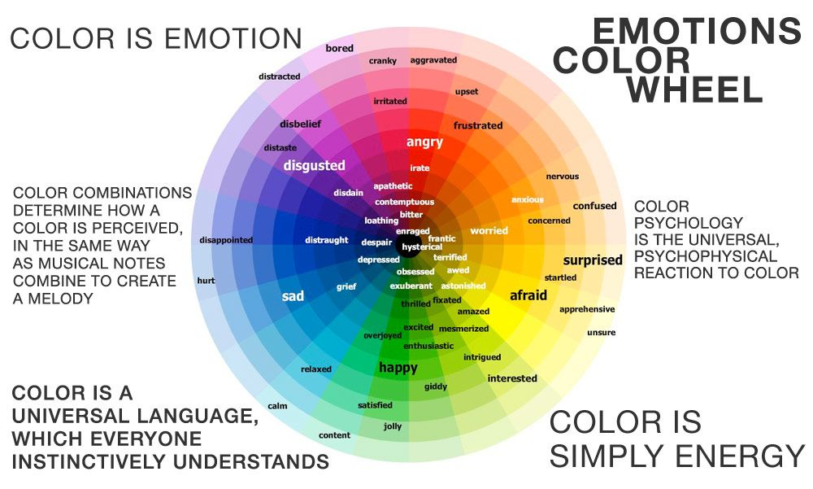
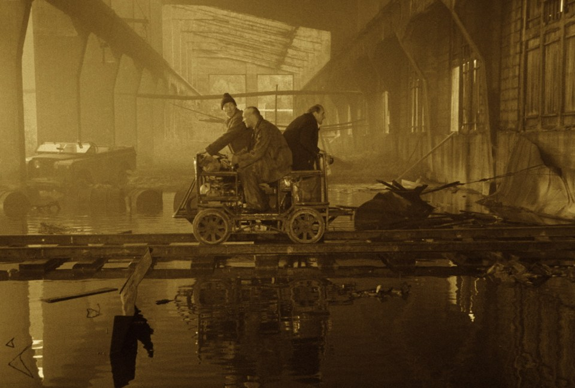
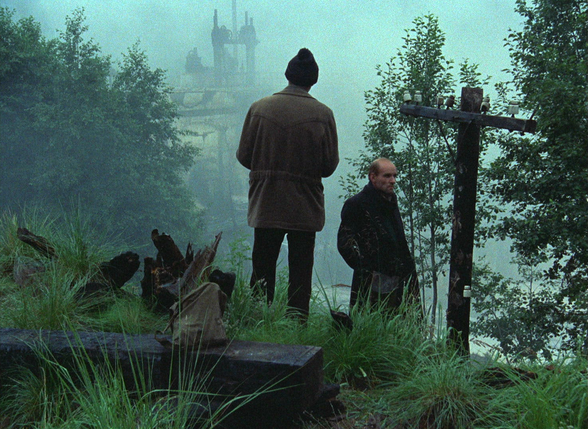

Couleurs
Les émotions
Les émotions des personnages
Au cinéma, les couleurs sont utilise pour refléter les émotions des personnages: si on veut montrer qu’une personne est triste on l’habille en couleur terne et on met un filtre bleu foncé sur l’image. Chaque couleur est associé a des sentiments.
Les émotions du public
Les couleurs servent aussi à manipuller les émotions de ’audience . Vous voulez que les spectateur soit triste ? Vous leur mettez une image avec des couleurs froides et désaturé . Les sentiments que chaque couleur est associé à peut aussi être utiliser pour dire au public ce qu’il doit ressentir .

L’information par la couleur
Les relations
Les couleurs, permettent de donner des information sur les relations entre les personna. Imaginons que vous êtes un réalisateur et on vous demande de tourner une scène de braquage de banque organisé . Donc, vous choisissez de les habillé de la même couleur pour signaler à l'audience que ce n'est pas juste une bande de petit voyou mais des criminel unis et organisé .
Les charactères
On peut aussi se servir des couleurs pour montrer comment est un personnage . Si c'est quelqu'un de sérieux, on peut l'habillé dans un gris monotone qui rappelle le monde du travail . Si c'est une personne joyeuse, on l'habille avec des couleur chaude et vibrante .
L'opposition
Les couleurs peuvent aussi être utiliser pour montrer l`opposition, que ce soit entre des lieux, comme dans le film STALKER de Tarkovski, ou entre des personnages et l'environement, comme avec Anton Chigurh dans No Country For Old Men.

